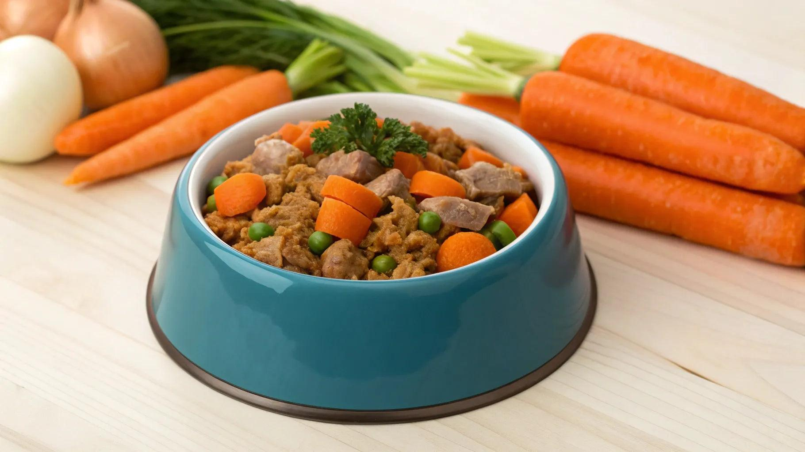
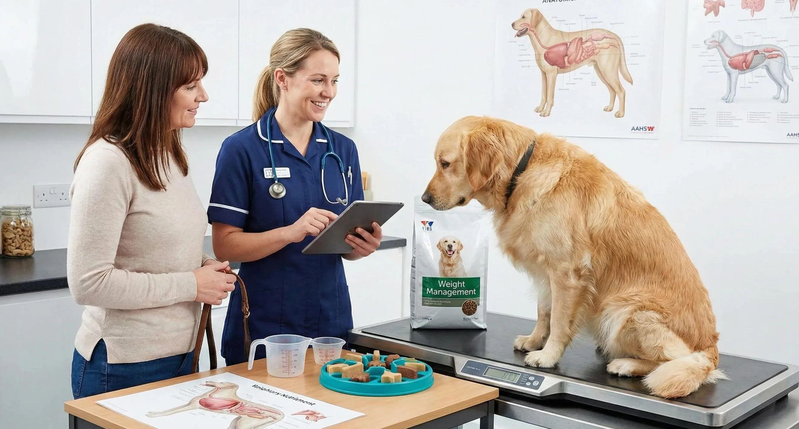
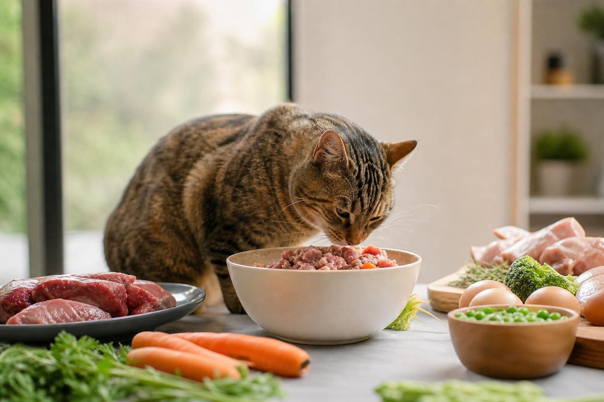

Ingredient Details
Common Culinary Uses:
Species Compatibility:
Every ingredient in Paw & Plate recipes is selected for visual purity, bioavailability, and cellular pet health.

Every culinary recipe developed in our pet kitchen is crafted around precise biological nutrient ratios. We balance fresh whole-food proteins, antioxidant-rich botanicals, healthy fatty acids, and essential minerals.
Wild Alaskan salmon, pasture-raised turkey, and grass-fed lamb for muscular repair and vibrant cellular energy.
Organic sweet potato, steamed kale, carrots, and wild blueberries to support optimal gut biome health.
Cold-pressed salmon oil and organic chia seed oil for brilliant coat sheen, joint lubrication, and brain support.
Organic Icelandic kelp meal, natural eggshell calcium, and turmeric for bone density and joint protection.
We inspect every single ingredient that enters our kitchen with the same rigor used in premium human culinary studios.
Every piece of meat, vegetable, and berry used in Paw & Plate recipes meets identical safety and quality standards required for human food production.

Gentle CookingInstead of high-heat industrial processing, our ingredients are gently simmered or steamed at low temperatures to lock in delicate natural vitamins and enzymes.

0% SyntheticsWe formulate completely without cheap grain fillers, artificial colors, chemical preservatives (BHA/BHT), or rendered meat meals. Pure food only.